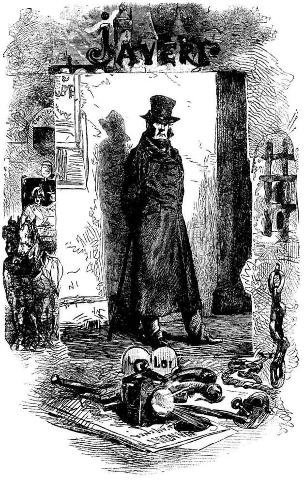

马德兰先生雇了人把芳汀抬到他自己厂房里的疗养室。他把她交给嬷嬷们，嬷嬷们把她安顿在床上。她骤然发了高烧。她在昏迷中大声叫喊，胡言乱语，闹了大半夜，到后来却睡着了。
快到第二天中午，芳汀醒来了，她听见在她床边有人呼吸，她拉起床帷，看见马德兰先生立在那里，望着她头边的一件东西。他的目光充满着怜悯沉痛的神情，他正在一心祈祷。她循着他的视线望去，看见他正对着悬在墙上的一个耶稣受难像祈祷。
从此马德兰先生在芳汀的心目中是另外一个人了。她觉得他浑身周围有层光。他当时完全沉浸在祈祷里。她望了他许久，不敢惊动他。到后来，她才细声向他说：
“您在那儿做什么？”
马德兰先生立在那地方已一个钟头了。他等待芳汀醒来。他握着她的手，试了她的脉搏，说道：
“您感到怎样？”
“我好，我睡了好一阵，”她说，“我觉得我好一些了，不久就没事了。”
他回答她先头的问题，好像他还听见她在问似的：
“我为天上的那位殉难者祈祷。”
在他心里，他还加了一句：“也为地下的这位殉难者。”
马德兰先生调查了一夜又一个早晨。现在他完全明白了。他知道了芳汀身世中一切痛心的细情。
他接着说：
“您很受了些痛苦，可怜的慈母。呵！您不用叫苦，现在您已取得做永生极乐之神的资格。这便是人成天使的道路。这并不是人的错处，人不知道有旁的办法。您懂吗？您脱离的那个地狱正是天堂的第一种形式。应当从那地方走起。”
他深深地叹了一口气。至于她，她带着那种缺了两个牙的绝美的笑容向他微笑。
沙威在当天晚上写了一封信。第二天早晨，他亲自把那封信送到滨海蒙特勒伊邮局。那封信是寄到巴黎去的，上面写着这样的字：“呈警署署长先生的秘书夏布耶先生”。因为警署里的那件事已经传出去了，邮局的女局长和其他几个人在寄出以前看见了那封信，并从地址上认出了沙威的笔迹，都以为他寄出的是辞职书。
马德兰先生赶紧写了一封信给德纳第夫妇。芳汀欠他们一百二十法郎。他寄给他们三百法郎，嘱咐他们在那数目里扣还，并且立刻把那孩子送到滨海蒙特勒伊来，因为她的母亲在害病，要看她。
德纳第喜出望外。“撞到了鬼！”他向他的婆娘说，“我们别放走这孩子。这个小百灵鸟快要变成有奶的牛了。我猜到了。一定有一个冤桶爱上了她的妈。”
他寄回一张造得非常精密的五百零几个法郎的账单。账单里还附了两张毫无问题的收据，一共三百多法郎，一张是医生开的，一张是药剂师开的，他们诊治过爱潘妮和阿兹玛的两场长病。珂赛特，我们说了，没有病过。那不过是一件小小的冒名顶替的事罢了。德纳第在账单下面写道：“内收三百法郎。”
马德兰先生立刻又寄去三百法郎，并且写道：“快把珂赛特送来。”
“还了得！”德纳第说，“我们别放走这孩子。”
但是芳汀的病一点没有起色。她始终留在那间养病室里。
那些嬷嬷当初接收并照顾“这姑娘”，心里都有些反感。凡是见过兰斯[1]地方那些浮雕的人，都记得那些贞女怎样鼓着下嘴唇去看那些疯处女的神情。贞女对荡妇的那种自古已然的蔑视，是妇德中一种最悠久的本能；那些嬷嬷们心中的蔑视，更因宗教的关系而倍加浓厚了。但是，不到几天，芳汀便把她们降服了。她有多种多样的谦恭和蔼的语言，她那慈母心肠更足以使人心软。一天，嬷嬷们听见她在发烧时说：“我做了个犯罪的人，但等我有了自己的孩子在身边，那就可以证明上帝已经赦免我的罪了，我生活在罪恶中时，我不愿珂赛特和我在一起，我会受不了她那双惊奇愁苦的眼睛。不过我是为了她才做坏事的，这一点让我得到上帝的赦免吧。珂赛特到了此地时，我就会感到上帝的保佑。那孩子是没有罪的，我望着她，我就得到了安慰。她什么都不知道。她是一个安琪儿，你们看吧，我的嬷嬷们，在她那样小小的年纪，翅膀是不会掉的。”
马德兰先生每天去看她两次，每次她都要问他说：
“我不久就可以看见我的珂赛特了吧？”
他老回答她说：
“也许就在明天早晨。她随时都可以到，我正等着她呢。”
于是那母亲的惨白面容也开朗了。
“呵！”她说，“我可就快乐了。”
我们刚才说过，她的病没有起色，并且她的状况仿佛一星期比一星期更沉重了。那一把雪是贴肉塞在她两块肩胛骨中间的，那样突然的一阵冷，立刻停止了她发汗的机能，因而几年以来潜伏在她体中的病，终于急剧恶化了。当时大家正开始采用劳安内克[2]杰出的指示，对肺病进行研究和治疗。医生听过芳汀的肺部以后，摇了摇头。
马德兰先生问那医生：
“怎样？”
“她不是有个孩子想看看吗？”医生说。
“是的。”
“那么赶快接她来吧。”
马德兰先生吃了一惊。
芳汀问他说：
“医生说了什么话？”
马德兰先生勉强微笑着。
“他说快把您的孩子接来，您的身体就好了。”
“呵！”她回答说，“他说得对！但是那德纳第家有什么事要留住我的珂赛特呢？呵！她就会来的。现在我总算看见幸福的日子就在我眼前了。”
但是德纳第不肯“放走那孩子”，并且找了各种不成理由的借口。珂赛特有点不舒服，冬季不宜上路，并且在那地方还有一些零用债务急待了清，他正在收取发票等等。
“我可以派个人去接珂赛特，”马德兰伯伯说，“在必要时，我还可以自己去。”
他照着芳汀的口述，写了这样一封信，又叫她签了名：
德纳第先生：
请将珂赛特交来人。
一切零星债款，我负责偿还。
此颂大安。
芳汀
正在这关头，发生了一件大事。我们枉费心机，想凿通人生旅途中的障碍，可是命中的厄运始终是要出现的。
[1] 兰斯（Reims），法国东北部城市，有一个著名的大天主堂。
[2] 劳安内克（Laënnec，1781—1826），法国医生，听诊方法的发明者。